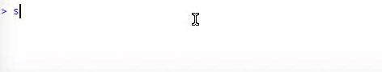
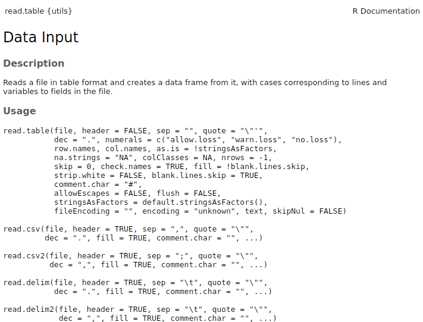

Código
sketchy::load_packages(c(
"RColorBrewer",
"ggplot2",
"readxl",
"tidyr",
"dplyr"
))sketchy::load_packages(c(
"RColorBrewer",
"ggplot2",
"readxl",
"tidyr",
"dplyr"
))
Familiarizarse con las funciones principales para importar y exportar datos
Conocer buenas prácticas para el manejo de datos que faciliten su uso en R
Existen algunos hábitos para ingresar datos que facilitarán la correcta importación de datos en R:
Reservar la primera fila para la cabecera
Reserve la primera columna a la unidad de muestreo
Utilice “_”,“.” o “-” en lugar de espacios vacíos (por ejemplo, “Cornell_University”)
Utilice nombres cortos
Evite utilizar símbolos poco comunes como ?, $,%, ^, &, *, (, ),-,#, ?,,,<,>, /, |, , [ ,] ,{, y }
Sea consistente al referirse a las mismas cosas (es decir, escríbalas siempre de la misma manera)
Elimine cualquier comentario adicional fuera de las columnas del conjunto de datos
Indique los valores que faltan con NA (o al menos con espacios vacíos)
Ni se le ocurra codificar los datos por colores en Excel
No fusione celdas
La importación de datos en R es un paso crucial y aparentemente sencillo. Sin embargo, dada la diversidad de formatos de datos y sistemas operativos, así como las numerosas fuentes de error posibles, la introducción de datos en R no siempre es tan sencilla. La mayoría de los problemas están relacionados con
Decirle a R en qué directorio se encuentra el archivo
Decirle a R cómo están codificados los datos (por ejemplo, separados por comas, anchura fija, etc.).
Manejo de celdas vacías y caracteres poco comunes
Para leer datos en R es necesario especificar el directorio de trabajo. Se puede establecer con la función setwd(). La forma de hacerlo depende del sistema operativo (windows, mac, Linux). La sintaxis del directorio sigue la estructura anidada de las carpetas. Por ejemplo:
setwd("/home/m/Desktop/")… establece el directorio de trabajo en la carpeta “Desktop”, que se encuentra dentro de “m”, que se encuentra dentro de “home”.
..;
Algunos consejos básicos para establecer el directorio de trabajo:
Asegúrese de que la ubicación está entre comillas
Asegúrese de que hay una barra diagonal (/) entre los nombres de las carpetas (aunque las barras diagonales dobles parecen funcionar en Windows).
No incluya ningún nombre de archivo en el nombre del directorio de la carpeta.
Para encontrar la ubicación, puede consultar las propiedades de un archivo de esa carpeta y copiarlo.
La ruta a la carpeta debe ir entre comillas (““)
El nombre debe coincidir exactamente (mejor copiar/pegar)
Utilice list.files() para comprobar qué archivos están en el directorio de trabajo
R puede sugerir y autocompletar los nombres de las carpetas pulsando “tab” cuando están entre comillas:

En windows debería ser algo como esto:
setwd("C:/location")También pueden hacerlo manualmente (¡solo en windows!):
setwd(choose.dir())
Debería aparecer una ventana en la que puede elegir la ubicación. Sin embargo, esto sólo se debe utilizar para averiguar la forma correcta de escribir la ubicación del directorio, no como parte de la propia secuencia de comandos.
Para mac establecer el directorio de trabajo debe ser algo como esto:
setwd("/Users/yourname/..")no incluya lo que tenga antes de “usuarios” (como en windows)
Similar al código usado en OSX:
setwd("/home/m/Desktop/")
La “~” (virgulilla) también puede utilizarse para omitir la carpeta “home” y “user” en Linux:
setwd("~/Desktop/")
El directorio de trabajo actual se puede comprobar de la siguiente manera:
getwd()[1] "/home/m/Dropbox/courses_and_workshops/estadistica/aprendizaje_estadistico_2024"
Cualquier archivo puede ser leído en R. Sólo es cuestión de hacer saber a R en qué formato está codificado el archivo (por ejemplo, qué convenciones se siguieron al generarlo). Los formatos más comunes para almacenar/intercambiar conjuntos de datos como los que solemos manejar en ciencias biológicas son txt, csv y xls/xlsx.
La función más utilizada para importar datos en R es read.table. De hecho, la documentación de esta función incluye todas las funciones por defecto para introducir datos:
?read.table

Los archivos .txt pueden leerse con read.table. Descarguemos primero un conjunto de datos de libre acceso en formato .txt:
# definir el directorio de trabajo
setwd("INGRESE LA DIRECCION DE LA CARPETA DONDE ESTAN LOS DATOS")
download.file(
"https://raw.githubusercontent.com/maRce10/UCR_ESP_2024/master/pantheria_mammals_data.txt",
destfile = "pantheria_mammals_data.txt"
)You can also manually download the file from here
El archivo puede introducirse en R de la siguiente forma:
# leer datos
datos_pantheria <- read.table("pantheria_mammals_data.txt", stringsAsFactors = FALSE, sep = "\t", header = TRUE)# explorar estructura
head(datos_pantheria)| MSW93_Order | MSW93_Family | MSW93_Genus | MSW93_Species | MSW93_Binomial | X1.1_ActivityCycle | X5.1_AdultBodyMass_g | X8.1_AdultForearmLen_mm | X13.1_AdultHeadBodyLen_mm | X2.1_AgeatEyeOpening_d | X3.1_AgeatFirstBirth_d | X18.1_BasalMetRate_mLO2hr | X5.2_BasalMetRateMass_g | X6.1_DietBreadth | X7.1_DispersalAge_d | X9.1_GestationLen_d | X12.1_HabitatBreadth | X22.1_HomeRange_km2 | X22.2_HomeRange_Indiv_km2 | X14.1_InterBirthInterval_d | X15.1_LitterSize | X16.1_LittersPerYear | X17.1_MaxLongevity_m | X5.3_NeonateBodyMass_g | X13.2_NeonateHeadBodyLen_mm | X21.1_PopulationDensity_n.km2 | X10.1_PopulationGrpSize | X23.1_SexualMaturityAge_d | X10.2_SocialGrpSize | X24.1_TeatNumber | X12.2_Terrestriality | X6.2_TrophicLevel | X25.1_WeaningAge_d | X5.4_WeaningBodyMass_g | X13.3_WeaningHeadBodyLen_mm | References | X5.5_AdultBodyMass_g_EXT | X16.2_LittersPerYear_EXT | X5.6_NeonateBodyMass_g_EXT | X5.7_WeaningBodyMass_g_EXT | X26.1_GR_Area_km2 | X26.2_GR_MaxLat_dd | X26.3_GR_MinLat_dd | X26.4_GR_MRLat_dd | X26.5_GR_MaxLong_dd | X26.6_GR_MinLong_dd | X26.7_GR_MRLong_dd | X27.1_HuPopDen_Min_n.km2 | X27.2_HuPopDen_Mean_n.km2 | X27.3_HuPopDen_5p_n.km2 | X27.4_HuPopDen_Change | X28.1_Precip_Mean_mm | X28.2_Temp_Mean_01degC | X30.1_AET_Mean_mm | X30.2_PET_Mean_mm |
|---|---|---|---|---|---|---|---|---|---|---|---|---|---|---|---|---|---|---|---|---|---|---|---|---|---|---|---|---|---|---|---|---|---|---|---|---|---|---|---|---|---|---|---|---|---|---|---|---|---|---|---|---|---|---|
| Rodentia | Muridae | Abditomys | latidens | Abditomys latidens | -999 | 268 | -999.00 | 223.99 | -999 | -999 | -999 | -999 | -999 | -999 | -999.00 | -999 | -999 | -999 | -999 | -999.00 | -999 | -999.0 | -999.0 | -999 | -999 | -999 | -999 | -999 | -999 | -999 | -999 | -999 | -999 | -999 | 2152 | -999 | -999 | -999 | -999 | 357 | 16.94 | 16.74 | 16.84 | 120.97 | 120.78 | 120.88 | 93 | 93.00 | 93 | 0.09 | 316.00 | 180.00 | 1443.00 | 1557.0 |
| Rodentia | Muridae | Abrawayaomys | ruschii | Abrawayaomys ruschii | -999 | 63 | -999.00 | -999.00 | -999 | -999 | -999 | -999 | -999 | -999 | -999.00 | -999 | -999 | -999 | -999 | -999.00 | -999 | -999.0 | -999.0 | -999 | -999 | -999 | -999 | -999 | -999 | -999 | -999 | -999 | -999 | -999 | 2655 | -999 | -999 | -999 | -999 | 126137 | -15.09 | -19.84 | -17.47 | -40.52 | -43.56 | -42.04 | 5 | 21.21 | 7 | 0.06 | 107.06 | 209.10 | 1084.47 | 1402.4 |
| Rodentia | Abrocomidae | Abrocoma | bennettii | Abrocoma bennettii | 1 | 251 | -999.00 | -999.00 | -999 | -999 | -999 | -999 | -999 | -999 | -999.00 | 3 | -999 | -999 | -999 | 4.86 | -999 | 27.6 | -999.0 | -999 | 142 | -999 | -999 | -999 | -999 | 2 | -999 | -999 | -999 | -999 | 543;890;1297;1492;2655 | -999 | -999 | -999 | -999 | 54616 | -27.71 | -35.58 | -31.64 | -69.40 | -71.70 | -70.55 | 0 | 63.15 | 1 | 0.07 | 20.44 | 17.66 | 213.09 | 1073.8 |
| Rodentia | Abrocomidae | Abrocoma | boliviensis | Abrocoma boliviensis | -999 | 158 | -999.00 | -999.00 | -999 | -999 | -999 | -999 | -999 | -999 | -999.00 | -999 | -999 | -999 | -999 | -999.00 | -999 | -999.0 | -999.0 | -999 | -999 | -999 | -999 | -999 | -999 | -999 | -999 | -999 | -999 | -999 | 2655 | -999 | -999 | -999 | -999 | 5774 | -17.44 | -18.05 | -17.75 | -63.49 | -64.51 | -64.00 | 5 | 29.24 | 5 | 0.04 | 82.63 | 175.55 | 1171.61 | 1487.3 |
| Rodentia | Abrocomidae | Abrocoma | cinerea | Abrocoma cinerea | -999 | 194 | -999.00 | -999.00 | -999 | -999 | -999 | -999 | -999 | -999 | 109.64 | 3 | -999 | -999 | -999 | 2.20 | -999 | -999.0 | 13.3 | -999 | -999 | -999 | -999 | -999 | -999 | 2 | -999 | -999 | -999 | -999 | 890;1297;1627;2655 | -999 | -999 | -999 | -999 | 381391 | -14.43 | -24.35 | -19.39 | -64.27 | -70.60 | -67.43 | 0 | 13.72 | 0 | 0.06 | 48.46 | 35.22 | 515.10 | 1257.3 |
| Chiroptera | Pteropodidae | Acerodon | celebensis | Acerodon celebensis | -999 | 382 | 133.49 | 201.55 | -999 | -999 | -999 | -999 | -999 | -999 | -999.00 | 1 | -999 | -999 | -999 | 0.98 | -999 | -999.0 | -999.0 | -999 | -999 | -999 | -999 | -999 | -999 | 2 | -999 | -999 | -999 | -999 | 978;1297;1658;2151;2655 | -999 | -999 | -999 | -999 | 173613 | 3.74 | -6.49 | -1.37 | 126.34 | 118.75 | 122.55 | 5 | 92.68 | 17 | 0.07 | 229.41 | 215.47 | 1812.60 | 1909.2 |
El nombre del archivo está entre comillas y contiene la extensión del archivo.
Tenga en cuenta que el valor -999 se utiliza para definir celdas vacías. Podemos leer estos valores como NAs al importar los datos utilizando el argumento ‘na.strings’:
# leer datos
datos_pantheria <-
read.table(
"pantheria_mammals_data.txt",
sep = "\t",
header = TRUE,
na.strings = "-999"
)
# explorar estructura
head(datos_pantheria)| MSW93_Order | MSW93_Family | MSW93_Genus | MSW93_Species | MSW93_Binomial | X1.1_ActivityCycle | X5.1_AdultBodyMass_g | X8.1_AdultForearmLen_mm | X13.1_AdultHeadBodyLen_mm | X2.1_AgeatEyeOpening_d | X3.1_AgeatFirstBirth_d | X18.1_BasalMetRate_mLO2hr | X5.2_BasalMetRateMass_g | X6.1_DietBreadth | X7.1_DispersalAge_d | X9.1_GestationLen_d | X12.1_HabitatBreadth | X22.1_HomeRange_km2 | X22.2_HomeRange_Indiv_km2 | X14.1_InterBirthInterval_d | X15.1_LitterSize | X16.1_LittersPerYear | X17.1_MaxLongevity_m | X5.3_NeonateBodyMass_g | X13.2_NeonateHeadBodyLen_mm | X21.1_PopulationDensity_n.km2 | X10.1_PopulationGrpSize | X23.1_SexualMaturityAge_d | X10.2_SocialGrpSize | X24.1_TeatNumber | X12.2_Terrestriality | X6.2_TrophicLevel | X25.1_WeaningAge_d | X5.4_WeaningBodyMass_g | X13.3_WeaningHeadBodyLen_mm | References | X5.5_AdultBodyMass_g_EXT | X16.2_LittersPerYear_EXT | X5.6_NeonateBodyMass_g_EXT | X5.7_WeaningBodyMass_g_EXT | X26.1_GR_Area_km2 | X26.2_GR_MaxLat_dd | X26.3_GR_MinLat_dd | X26.4_GR_MRLat_dd | X26.5_GR_MaxLong_dd | X26.6_GR_MinLong_dd | X26.7_GR_MRLong_dd | X27.1_HuPopDen_Min_n.km2 | X27.2_HuPopDen_Mean_n.km2 | X27.3_HuPopDen_5p_n.km2 | X27.4_HuPopDen_Change | X28.1_Precip_Mean_mm | X28.2_Temp_Mean_01degC | X30.1_AET_Mean_mm | X30.2_PET_Mean_mm |
|---|---|---|---|---|---|---|---|---|---|---|---|---|---|---|---|---|---|---|---|---|---|---|---|---|---|---|---|---|---|---|---|---|---|---|---|---|---|---|---|---|---|---|---|---|---|---|---|---|---|---|---|---|---|---|
| Rodentia | Muridae | Abditomys | latidens | Abditomys latidens | NA | 268 | NA | 223.99 | NA | NA | NA | NA | NA | NA | NA | NA | NA | NA | NA | NA | NA | NA | NA | NA | NA | NA | NA | NA | NA | NA | NA | NA | NA | NA | 2152 | NA | NA | NA | NA | 357 | 16.94 | 16.74 | 16.84 | 120.97 | 120.78 | 120.88 | 93 | 93.00 | 93 | 0.09 | 316.00 | 180.00 | 1443.00 | 1557.0 |
| Rodentia | Muridae | Abrawayaomys | ruschii | Abrawayaomys ruschii | NA | 63 | NA | NA | NA | NA | NA | NA | NA | NA | NA | NA | NA | NA | NA | NA | NA | NA | NA | NA | NA | NA | NA | NA | NA | NA | NA | NA | NA | NA | 2655 | NA | NA | NA | NA | 126137 | -15.09 | -19.84 | -17.47 | -40.52 | -43.56 | -42.04 | 5 | 21.21 | 7 | 0.06 | 107.06 | 209.10 | 1084.47 | 1402.4 |
| Rodentia | Abrocomidae | Abrocoma | bennettii | Abrocoma bennettii | 1 | 251 | NA | NA | NA | NA | NA | NA | NA | NA | NA | 3 | NA | NA | NA | 4.86 | NA | 27.6 | NA | NA | 142 | NA | NA | NA | NA | 2 | NA | NA | NA | NA | 543;890;1297;1492;2655 | NA | NA | NA | NA | 54616 | -27.71 | -35.58 | -31.64 | -69.40 | -71.70 | -70.55 | 0 | 63.15 | 1 | 0.07 | 20.44 | 17.66 | 213.09 | 1073.8 |
| Rodentia | Abrocomidae | Abrocoma | boliviensis | Abrocoma boliviensis | NA | 158 | NA | NA | NA | NA | NA | NA | NA | NA | NA | NA | NA | NA | NA | NA | NA | NA | NA | NA | NA | NA | NA | NA | NA | NA | NA | NA | NA | NA | 2655 | NA | NA | NA | NA | 5774 | -17.44 | -18.05 | -17.75 | -63.49 | -64.51 | -64.00 | 5 | 29.24 | 5 | 0.04 | 82.63 | 175.55 | 1171.61 | 1487.3 |
| Rodentia | Abrocomidae | Abrocoma | cinerea | Abrocoma cinerea | NA | 194 | NA | NA | NA | NA | NA | NA | NA | NA | 109.64 | 3 | NA | NA | NA | 2.20 | NA | NA | 13.3 | NA | NA | NA | NA | NA | NA | 2 | NA | NA | NA | NA | 890;1297;1627;2655 | NA | NA | NA | NA | 381391 | -14.43 | -24.35 | -19.39 | -64.27 | -70.60 | -67.43 | 0 | 13.72 | 0 | 0.06 | 48.46 | 35.22 | 515.10 | 1257.3 |
| Chiroptera | Pteropodidae | Acerodon | celebensis | Acerodon celebensis | NA | 382 | 133.49 | 201.55 | NA | NA | NA | NA | NA | NA | NA | 1 | NA | NA | NA | 0.98 | NA | NA | NA | NA | NA | NA | NA | NA | NA | 2 | NA | NA | NA | NA | 978;1297;1658;2151;2655 | NA | NA | NA | NA | 173613 | 3.74 | -6.49 | -1.37 | 126.34 | 118.75 | 122.55 | 5 | 92.68 | 17 | 0.07 | 229.41 | 215.47 | 1812.60 | 1909.2 |
De nuevo, podemos descargar un archivo de ejemplo en línea:
# bajar datos en zip
download.file(
"https://www.birds.cornell.edu/clementschecklist/wp-content/uploads/2023/12/Clements-v2023-October-2023-csv.zip",
destfile = "clements_bird_list.zip"
)
# extraer zip
unzip("clements_bird_list.zip", files = "Clements-v2023-October-2023.csv")
# leer datos
clm_lst <-
read.csv("Clements-v2023-October-2023.csv", stringsAsFactors = FALSE)
head(clm_lst)| sort.v2023 | species_code | taxon_concept_id | Clements.v2023.change | text.for.website.v2023 | category | English.name | scientific.name | authority | name.and.authority | range | order | family | extinct | extinct.year | sort.v2022 | page.6.0 |
|---|---|---|---|---|---|---|---|---|---|---|---|---|---|---|---|---|
| 0 | Clements, J. F., P. C. Rasmussen, T. S. Schulenberg, M. J. Iliff, T. A. Fredericks, J. A. Gerbracht, D. Lepage, A. Spencer, S. M. Billerman, B. L. Sullivan, and C. L. Wood. 2023. The eBird/Clements checklist of birds of the world: v2023. Downloaded from https://www.birds.cornell.edu/clementschecklist/download/ | NA | NA | |||||||||||||
| 1 | struth1 | family | Ostriches | Struthionidae | Struthioniformes | Struthionidae (Ostriches) | NA | 1 | ||||||||
| 2 | ostric2 | avibase-2247CB05 | species | Common Ostrich | Struthio camelus | Linnaeus, 1758 | Struthio camelus Linnaeus, 1758 | Struthioniformes | Struthionidae (Ostriches) | NA | 2 | 2 | ||||
| 3 | comost1 | avibase-E7F58C33 | subspecies | Struthio camelus camelus | Linnaeus, 1758 | Struthio camelus camelus Linnaeus, 1758 | Sahel of North Africa and the Sudan | Struthioniformes | Struthionidae (Ostriches) | NA | 3 | 2 | ||||
| 4 | comost2 | avibase-06477478 | subspecies | Struthio camelus syriacus | Rothschild, 1919 | Struthio camelus syriacus Rothschild, 1919 | Formerly Syrian and Arabian deserts. Extinct ca. 1966 | Struthioniformes | Struthionidae (Ostriches) | 1 | 1966 | 4 | 2 | |||
| 5 | comost3 | avibase-BF8ED7FA | subspecies | Struthio camelus massaicus | Neumann, 1898 | Struthio camelus massaicus Neumann, 1898 | S Kenya and e Tanzania | Struthioniformes | Struthionidae (Ostriches) | NA | 5 | 2 |
También puede descargar manualmente el archivo desde aquí
Como en el ejemplo anterior, podemos decirle a R cómo identificar las celdas vacías utilizando el argumento na.strings:
clm_lst <-
read.csv(
"Clements-v2023-October-2023.csv",
stringsAsFactors = FALSE,
na.strings = ""
)
head(clm_lst)| sort.v2023 | species_code | taxon_concept_id | Clements.v2023.change | text.for.website.v2023 | category | English.name | scientific.name | authority | name.and.authority | range | order | family | extinct | extinct.year | sort.v2022 | page.6.0 |
|---|---|---|---|---|---|---|---|---|---|---|---|---|---|---|---|---|
| 0 | NA | NA | NA | NA | NA | Clements, J. F., P. C. Rasmussen, T. S. Schulenberg, M. J. Iliff, T. A. Fredericks, J. A. Gerbracht, D. Lepage, A. Spencer, S. M. Billerman, B. L. Sullivan, and C. L. Wood. 2023. The eBird/Clements checklist of birds of the world: v2023. Downloaded from https://www.birds.cornell.edu/clementschecklist/download/ | NA | NA | NA | NA | NA | NA | NA | NA | NA | NA |
| 1 | struth1 | NA | NA | NA | family | Ostriches | Struthionidae | NA | NA | NA | Struthioniformes | Struthionidae (Ostriches) | NA | NA | 1 | NA |
| 2 | ostric2 | avibase-2247CB05 | NA | NA | species | Common Ostrich | Struthio camelus | Linnaeus, 1758 | Struthio camelus Linnaeus, 1758 | NA | Struthioniformes | Struthionidae (Ostriches) | NA | NA | 2 | 2 |
| 3 | comost1 | avibase-E7F58C33 | NA | NA | subspecies | NA | Struthio camelus camelus | Linnaeus, 1758 | Struthio camelus camelus Linnaeus, 1758 | Sahel of North Africa and the Sudan | Struthioniformes | Struthionidae (Ostriches) | NA | NA | 3 | 2 |
| 4 | comost2 | avibase-06477478 | NA | NA | subspecies | NA | Struthio camelus syriacus | Rothschild, 1919 | Struthio camelus syriacus Rothschild, 1919 | Formerly Syrian and Arabian deserts. Extinct ca. 1966 | Struthioniformes | Struthionidae (Ostriches) | 1 | 1966 | 4 | 2 |
| 5 | comost3 | avibase-BF8ED7FA | NA | NA | subspecies | NA | Struthio camelus massaicus | Neumann, 1898 | Struthio camelus massaicus Neumann, 1898 | S Kenya and e Tanzania | Struthioniformes | Struthionidae (Ostriches) | NA | NA | 5 | 2 |
La mayoría de los investigadores introducen los datos en hojas de cálculo Excel. Así que sería bastante práctico leer los datos directamente desde ahí. Para leer archivos xls y xlsx necesitamos instalar el paquete “readxl” (hay otros paquetes que se pueden utilizar pero todos funcionan de forma similar):
install.packages(pkgs = "readxl")
library(readxl)
Como hicimos anteriormente, descargue un archivo de ejemplo de un repositorio en línea. En este caso es la misma lista de taxonomía de aves de Clements en formato xlsx:
download.file("https://www.birds.cornell.edu/clementschecklist/wp-content/uploads/2023/10/Clements-v2023-October-2023.xlsx", destfile = "clements_bird_list.xlsx")También puede descargar manualmente el archivo desde aquí
Ahora podemos utilizar la función read_excel() para leer el archivo:
# leer archivo
clm_lst2 <- read_excel("clements_bird_list.xlsx", sheet = 1)
head(clm_lst2)| sort v2023 | species_code | taxon_concept_id | Clements v2023 change | text for website v2023 | category | English name | scientific name | authority | name and authority | range | order | family | extinct | extinct year | sort v2022 | page 6.0 |
|---|---|---|---|---|---|---|---|---|---|---|---|---|---|---|---|---|
| 0 | NA | NA | NA | NA | NA | Clements, J. F., P. C. Rasmussen, T. S. Schulenberg, M. J. Iliff, T. A. Fredericks, J. A. Gerbracht, D. Lepage, A. Spencer, S. M. Billerman, B. L. Sullivan, and C. L. Wood. 2023. The eBird/Clements checklist of birds of the world: v2023. Downloaded from https://www.birds.cornell.edu/clementschecklist/download/ | NA | NA | NA | NA | NA | NA | NA | NA | NA | NA |
| 1 | struth1 | NA | NA | NA | family | Ostriches | Struthionidae | NA | NA | NA | Struthioniformes | Struthionidae (Ostriches) | NA | NA | 1 | NA |
| 2 | ostric2 | avibase-2247CB05 | NA | NA | species | Common Ostrich | Struthio camelus | Linnaeus, 1758 | Struthio camelus Linnaeus, 1758 | NA | Struthioniformes | Struthionidae (Ostriches) | NA | NA | 2 | 2 |
| 3 | comost1 | avibase-E7F58C33 | NA | NA | subspecies | NA | Struthio camelus camelus | Linnaeus, 1758 | Struthio camelus camelus Linnaeus, 1758 | Sahel of North Africa and the Sudan | Struthioniformes | Struthionidae (Ostriches) | NA | NA | 3 | 2 |
| 4 | comost2 | avibase-06477478 | NA | NA | subspecies | NA | Struthio camelus syriacus | Rothschild, 1919 | Struthio camelus syriacus Rothschild, 1919 | Formerly Syrian and Arabian deserts. Extinct ca. 1966 | Struthioniformes | Struthionidae (Ostriches) | 1 | 1966 | 4 | 2 |
| 5 | comost3 | avibase-BF8ED7FA | NA | NA | subspecies | NA | Struthio camelus massaicus | Neumann, 1898 | Struthio camelus massaicus Neumann, 1898 | S Kenya and e Tanzania | Struthioniformes | Struthionidae (Ostriches) | NA | NA | 5 | 2 |
You need to specify the file name (including extension) and the excel sheet (tab) name. read_excel() auto detects the format from the file extension. The functions read_xls() and read_xlsx() can be used to read files without extension.
Todas las funciones predeterminadas para introducir datos en R tienen una contrapartida para exportar el mismo tipo de datos. Los nombres de estas otras funciones son similares a los de las de lectura de datos, aunque suelen empezar por “write” o “save”.
1.1 ¿Cuáles son los nombres de las funciones por defecto para exportar los formatos de datos que hemos utilizado anteriormente? (pista: prueba apropos para comprobar qué funciones están disponibles)
1.2 Exportar los datos de mamíferos como archivo .csv.
1.3 Vuelva a exportar los datos de mamíferos, esta vez excluyendo los nombres de las filas
1.4 Leer el archivo .csv con read.table.
1.5 ¿Qué otros paquetes pueden importar archivos excel en R?
1.6 ¿Se puede exportar un archivo excel o añadir datos a un archivo excel existente desde R?
1.7 Utilizando el archivo “clements_bird_list.csv”, ¿cómo le diría a R que leyera tanto “Rheiformes” como “Ostriches” como celdas vacías (sin dejar de leer las celdas vacías como celdas vacías)?
Esta sección trata de la organización de los datos de forma que se simplifique su manejo, exploración y análisis. Como probablemente puedas adivinar, cuanto más consistentes se hacen las cosas, más predecibles se vuelven. Esto también se aplica a los datos. Si los datos se organizan con la misma lógica, cabe esperar que el mismo tipo de manipulaciones y análisis sean aplicables a distintos conjuntos de datos. La organización de los datos es un aspecto clave (pero normalmente descuidado) del flujo de trabajo del análisis de datos. Cuando los datos están bien organizados, se dedica mucho menos tiempo a formatearlos y más a las cuestiones analíticas reales.
Cuando sea posible, ejecutaremos los ejemplos de formateo de datos utilizando tanto el paquete ‘tidyr’ como las funciones base de R.
Datos compactos (“tidy data”) es una lógica para organizar conjuntos de datos de forma coherente e intuitiva. Para ejecutar parte del código de abajo necesitarás los paquetes ‘tidyr’ y ‘dplyr’, que se pueden instalar/cargar de la siguiente manera:
install.packages(pkgs = "tidyr")
install.packages(pkgs = "dplyr")
library(tidyr)
library(dplyr)
Los mismos datos pueden representarse de muchas maneras. En el ejemplo siguiente, cada conjunto de datos muestra exactamente los mismos valores de cuatro variables país, año, población y casos, pero en cada conjunto de datos los valores están organizados de forma diferente. Los datos muestran el número de casos de tuberculosis en Afganistán, Brasil y China entre 1999 y 2000:
as.data.frame(table1)| country | year | cases | population |
|---|---|---|---|
| Afghanistan | 1999 | 745 | 19987071 |
| Afghanistan | 2000 | 2666 | 20595360 |
| Brazil | 1999 | 37737 | 172006362 |
| Brazil | 2000 | 80488 | 174504898 |
| China | 1999 | 212258 | 1272915272 |
| China | 2000 | 213766 | 1280428583 |
as.data.frame(table2)| country | year | type | count |
|---|---|---|---|
| Afghanistan | 1999 | cases | 745 |
| Afghanistan | 1999 | population | 19987071 |
| Afghanistan | 2000 | cases | 2666 |
| Afghanistan | 2000 | population | 20595360 |
| Brazil | 1999 | cases | 37737 |
| Brazil | 1999 | population | 172006362 |
| Brazil | 2000 | cases | 80488 |
| Brazil | 2000 | population | 174504898 |
| China | 1999 | cases | 212258 |
| China | 1999 | population | 1272915272 |
| China | 2000 | cases | 213766 |
| China | 2000 | population | 1280428583 |
as.data.frame(table3)| country | year | rate |
|---|---|---|
| Afghanistan | 1999 | 745/19987071 |
| Afghanistan | 2000 | 2666/20595360 |
| Brazil | 1999 | 37737/172006362 |
| Brazil | 2000 | 80488/174504898 |
| China | 1999 | 212258/1272915272 |
| China | 2000 | 213766/1280428583 |
O incluso repartidos en 2 conjuntos de datos diferentes:
as.data.frame(table4a)| country | 1999 | 2000 |
|---|---|---|
| Afghanistan | 745 | 2666 |
| Brazil | 37737 | 80488 |
| China | 212258 | 213766 |
as.data.frame(table4b)| country | 1999 | 2000 |
|---|---|---|
| Afghanistan | 19987071 | 20595360 |
| Brazil | 172006362 | 174504898 |
| China | 1272915272 | 1280428583 |
Todos estos conjuntos de datos contenían los mismos datos subyacentes. Sin embargo, no son igual de fáciles de utilizar.
Existen tres reglas interrelacionadas para ordenar un conjunto de datos:
Cada variable debe tener su propia columna
Each observation must have its own row
Cada valor debe tener su propia celda
Esta figura muestra las reglas visualmente:
 * Modified from R for Data Science
* Modified from R for Data Science
Estas tres reglas están interrelacionadas porque es imposible satisfacer sólo dos de las tres. Esa interrelación conduce a un conjunto aún más sencillo de instrucciones prácticas:
Ponga cada conjunto de datos en un marco de datos
Ponga cada variable en una columna
En el ejemplo anterior, sólo la tabla1 está ordenada. Es la única representación en la que cada columna es una variable. Formatear los datos de esta manera tiene dos ventajas principales:
Si tienes una estructura de datos consistente, es más fácil aprender las herramientas que trabajan con ella porque tienen una uniformidad subyacente
Colocar las variables en columnas se ajusta bien a la naturaleza vectorial de R. Como hemos visto, las funciones incorporadas en R trabajan con vectores de valores. Esto hace que la transformación de datos ordenados resulte especialmente natural.
2.1 Describa cómo están organizadas las variables y observaciones en cada uno de los marcos de datos de muestreo
2.2 Calcule la tasa de casos por 10000 personas para “tabla1”, “tabla2” y “tabla4a”/“tabla4b”.
Un problema habitual es un conjunto de datos en el que algunos de los nombres de las columnas no son nombres de variables, sino valores de una variable. Tomemos “tabla4a”: los nombres de las columnas 1999 y 2000 representan valores de la variable año, y cada fila representa dos observaciones, no una:
as.data.frame(table4a)| country | 1999 | 2000 |
|---|---|---|
| Afghanistan | 745 | 2666 |
| Brazil | 37737 | 80488 |
| China | 212258 | 213766 |
Para ordenar un conjunto de datos como éste, necesitamos reunir esas columnas en un nuevo par de variables. Para ello necesitamos tres parámetros:
El conjunto de columnas que representan valores, no variables. En este ejemplo, son las columnas 1999 y 2000.
El nombre de la variable cuyos valores forman los nombres de las columnas. En la sintaxis ‘tidyr’ se llama key, que en este caso es year.
El nombre de la variable cuyos valores se reparten por las celdas. En la sintaxis ‘tidyr’ que se llama que value, que en este caso es el número de cases
Estos parámetros se pueden utilizar para crear un conjunto de datos ordenados utilizando la función gather():
gather(table4a, key = "year", value = "cases", `1999`, `2000`)| country | year | cases |
|---|---|---|
| Afghanistan | 1999 | 745 |
| Brazil | 1999 | 37737 |
| China | 1999 | 212258 |
| Afghanistan | 2000 | 2666 |
| Brazil | 2000 | 80488 |
| China | 2000 | 213766 |
Podemos visualizar este formato de la siguiente manera:
 * Modified from R for Data Science
* Modified from R for Data Science
gather() también se puede utilizar para ordenar table4b. La única diferencia es la variable almacenada en los valores de las celdas:
gather(
data = table4b,
key = "year",
value = "population",
`1999`,
`2000`
)| country | year | population |
|---|---|---|
| Afghanistan | 1999 | 19987071 |
| Brazil | 1999 | 172006362 |
| China | 1999 | 1272915272 |
| Afghanistan | 2000 | 20595360 |
| Brazil | 2000 | 174504898 |
| China | 2000 | 1280428583 |
Para combinar las versiones ordenadas de las tablas table4a y table4b en un único marco de datos (o ‘tibble’), podemos utilizar dplyr::left_join() o merge() de la base R:
tidy4a <-
gather(table4a, key = "year", value = "cases", `1999`, `2000`)
tidy4b <-
gather(table4b, key = "year", value = "population", `1999`, `2000`)
left_join(
x = tidy4a,
y = tidy4b,
by = c("country", "year")
)| country | year | cases | population |
|---|---|---|---|
| Afghanistan | 1999 | 745 | 19987071 |
| Brazil | 1999 | 37737 | 172006362 |
| China | 1999 | 212258 | 1272915272 |
| Afghanistan | 2000 | 2666 | 20595360 |
| Brazil | 2000 | 80488 | 174504898 |
| China | 2000 | 213766 | 1280428583 |
merge(
x = tidy4a,
y = tidy4b,
by = c("country", "year")
)| country | year | cases | population |
|---|---|---|---|
| Afghanistan | 1999 | 745 | 19987071 |
| Afghanistan | 2000 | 2666 | 20595360 |
| Brazil | 1999 | 37737 | 172006362 |
| Brazil | 2000 | 80488 | 174504898 |
| China | 1999 | 212258 | 1272915272 |
| China | 2000 | 213766 | 1280428583 |
El expandir es lo contrario de la agrupación. Se utiliza cuando una observación está dispersa en varias filas. Por ejemplo, en la tabla2 una observación es un país en un año, pero cada observación está dispersa en dos filas:
table2| country | year | type | count |
|---|---|---|---|
| Afghanistan | 1999 | cases | 745 |
| Afghanistan | 1999 | population | 19987071 |
| Afghanistan | 2000 | cases | 2666 |
| Afghanistan | 2000 | population | 20595360 |
| Brazil | 1999 | cases | 37737 |
| Brazil | 1999 | population | 172006362 |
| Brazil | 2000 | cases | 80488 |
| Brazil | 2000 | population | 174504898 |
| China | 1999 | cases | 212258 |
| China | 1999 | population | 1272915272 |
| China | 2000 | cases | 213766 |
| China | 2000 | population | 1280428583 |
Para ordenar este conjunto de datos, sólo necesitamos dos parámetros:
La columna que contiene los nombres de las variables, la columna key. Aquí, es type.
La columna que contiene los valores de las variables múltiples, la columna value. la columna value. Aquí es count.
Para hacer esto podemos usar spread():
spread(table2, key = "type", value = "count")| country | year | cases | population |
|---|---|---|---|
| Afghanistan | 1999 | 745 | 19987071 |
| Afghanistan | 2000 | 2666 | 20595360 |
| Brazil | 1999 | 37737 | 172006362 |
| Brazil | 2000 | 80488 | 174504898 |
| China | 1999 | 212258 | 1272915272 |
| China | 2000 | 213766 | 1280428583 |
que puede visualizarse de la siguiente manera:
 * Modified from R for Data Science
* Modified from R for Data Science
spread() y gather() son funciones complementarias. gather() hace las tablas anchas más estrechas y largas; spread() hace las tablas largas más cortas y anchas.
3.1 Ordena el siguiente conjunto de datos sobre la altura de los árboles de 2 especies:
plnt_sz <- data.frame(
forest = c("old_growth", "disturbed"),
Species_1 = c(154, 160),
Species_2 = c(120, 113)
)
Hasta ahora hemos arreglado “tabla2” y “tabla4”, pero no “tabla3”. La “tabla3” tiene un problema diferente: tenemos una columna (tasa) que contiene dos variables (casos y población). Esto puede solucionarse con la función separate() . También veremos su complemento unite(), que se utiliza cuando una sola variable está repartida en varias columnas.
La función separate() separa una columna en varias columnas, dividiéndolas donde aparezca un carácter separador. Por ejemplo, table3:
as.data.frame(table3)| country | year | rate |
|---|---|---|
| Afghanistan | 1999 | 745/19987071 |
| Afghanistan | 2000 | 2666/20595360 |
| Brazil | 1999 | 37737/172006362 |
| Brazil | 2000 | 80488/174504898 |
| China | 1999 | 212258/1272915272 |
| China | 2000 | 213766/1280428583 |
Visualmente hace algo así:
 * Modified from R for Data Science
* Modified from R for Data Science
La columna tasa contiene las variables casos y población, y necesitamos separarla en dos variables. separate() toma el nombre de la columna a separar, y los nombres de las nuevas columnas a crear:
separate(
data = table3,
col = rate,
into = c("cases", "population")
)| country | year | cases | population |
|---|---|---|---|
| Afghanistan | 1999 | 745 | 19987071 |
| Afghanistan | 2000 | 2666 | 20595360 |
| Brazil | 1999 | 37737 | 172006362 |
| Brazil | 2000 | 80488 | 174504898 |
| China | 1999 | 212258 | 1272915272 |
| China | 2000 | 213766 | 1280428583 |
De forma predeterminada, separate() dividirá basándose en cualquier carácter no alfanumérico (es decir, un carácter que no sea un número o una letra). En el código anterior, separate() divide los valores de rate en los caracteres de la barra diagonal. Esto puede indicarse explícitamente (para evitar errores):
tb3 <-
separate(
data = table3,
col = rate,
into = c("cases", "population"),
sep = "/"
)
tb3| country | year | cases | population |
|---|---|---|---|
| Afghanistan | 1999 | 745 | 19987071 |
| Afghanistan | 2000 | 2666 | 20595360 |
| Brazil | 1999 | 37737 | 172006362 |
| Brazil | 2000 | 80488 | 174504898 |
| China | 1999 | 212258 | 1272915272 |
| China | 2000 | 213766 | 1280428583 |
tibble [6 × 4] (S3: tbl_df/tbl/data.frame)
$ country : chr [1:6] "Afghanistan" "Afghanistan" "Brazil" "Brazil" ...
$ year : num [1:6] 1999 2000 1999 2000 1999 ...
$ cases : chr [1:6] "745" "2666" "37737" "80488" ...
$ population: chr [1:6] "19987071" "20595360" "172006362" "174504898" ...
Tenga en cuenta que case y population son columnas de caracteres. Por defecto separate() deja el tipo de las nuevas columnas como en la original. En este caso esto no es lo ideal ya que realmente son números. Podemos pedir a separate() que intente convertir a tipos mejores usando convert = TRUE:
tb3 <-
separate(
data = table3,
col = rate,
into = c("cases", "population"),
convert = TRUE
)
str(tb3)tibble [6 × 4] (S3: tbl_df/tbl/data.frame)
$ country : chr [1:6] "Afghanistan" "Afghanistan" "Brazil" "Brazil" ...
$ year : num [1:6] 1999 2000 1999 2000 1999 ...
$ cases : int [1:6] 745 2666 37737 80488 212258 213766
$ population: int [1:6] 19987071 20595360 172006362 174504898 1272915272 1280428583
También puede pasar un vector de enteros a sep, que serán interpretados como posiciones en las que dividir. Los valores positivos comienzan en 1 en el extremo izquierdo de las cadenas; los valores negativos comienzan en -1 en el extremo derecho de las cadenas. Cuando se usan enteros para separar cadenas, la longitud de sep debe ser uno menos que el número de nombres en into. Puede utilizarlo para separar los dos últimos dígitos de cada año:
separate(
data = table3,
col = year,
into = c("century", "year"),
sep = 2
)| country | century | year | rate |
|---|---|---|---|
| Afghanistan | 19 | 99 | 745/19987071 |
| Afghanistan | 20 | 00 | 2666/20595360 |
| Brazil | 19 | 99 | 37737/172006362 |
| Brazil | 20 | 00 | 80488/174504898 |
| China | 19 | 99 | 212258/1272915272 |
| China | 20 | 00 | 213766/1280428583 |
La separación de columnas también se puede hacer con la base R, aunque requiere un poco más de codificación:
table3$cases <-
sapply(table3$rate, function(x) {
try(strsplit(x, "/")[[1]][1])
},
USE.NAMES = FALSE
)
table3$population <-
sapply(table3$rate, function(x) {
try(strsplit(x, "/")[[1]][2])
},
USE.NAMES = FALSE
)
tb3| country | year | rate | cases | population |
|---|---|---|---|---|
| Afghanistan | 1999 | 745/19987071 | 745 | 19987071 |
| Afghanistan | 2000 | 2666/20595360 | 2666 | 20595360 |
| Brazil | 1999 | 37737/172006362 | 37737 | 172006362 |
| Brazil | 2000 | 80488/174504898 | 80488 | 174504898 |
| China | 1999 | 212258/1272915272 | 212258 | 1272915272 |
| China | 2000 | 213766/1280428583 | 213766 | 1280428583 |
tibble [6 × 4] (S3: tbl_df/tbl/data.frame)
$ country : chr [1:6] "Afghanistan" "Afghanistan" "Brazil" "Brazil" ...
$ year : num [1:6] 1999 2000 1999 2000 1999 ...
$ cases : chr [1:6] "745" "2666" "37737" "80488" ...
$ population: chr [1:6] "19987071" "20595360" "172006362" "174504898" ...
unite() es la inversa de separate(): combinar varias columnas en una sola:
 * Modified from R for Data Science
* Modified from R for Data Science
Sin embargo, la necesitará con mucha menos frecuencia que separate().
Podemos utilizar unite() para volver a unir las columnas century y year que creamos anteriormente:
unite(data = table5, col = "new", "century", "year")| country | new | rate |
|---|---|---|
| Afghanistan | 19_99 | 745/19987071 |
| Afghanistan | 20_00 | 2666/20595360 |
| Brazil | 19_99 | 37737/172006362 |
| Brazil | 20_00 | 80488/174504898 |
| China | 19_99 | 212258/1272915272 |
| China | 20_00 | 213766/1280428583 |
En esta función también podemos utilizar el argumento sep (aunque en este ejemplo no se ha especificado).
4.1 Una century y year de la “tabla5” usando R básico (pista: paste())
Probablemente el formato mas común para exportar datos de R es .csv. La función write.csv permite guardar cuadros de datos (data frame) o matrices (u otros objetos que se puedan convertir en un cuadro de datos), como archivos .csv. Por ejemplo, podemos guardar el cuadro de datos iris de esta forma:
write.csv(x = iris, file = "iris.csv")Esta función incluye el número de fila como una columna de forma predeterminada. Esto puede hacer que, cuando leemos y guardamos varias veces los datos, se acumulen las columnas con el número de fila. Por tanto es conveniente excluir los números de fila cuando se guardan estos archivos. Esto lo podemos hacer usando el argumento row.names de esta forma:
write.csv(
x = iris,
file = "iris.csv",
row.names = FALSE
)También puede ser útil guardar el archivo en un directorio diferente al directorio de trabajo actual, sin tener que cambiarlo con setwd(). Esto lo podemos hacer incluyendo la función file.path() así:
write.csv(
x = iris,
file = file.path("RUTA_AL_DIRECTORIO", "iris.csv"),
row.names = FALSE
)Archivos .txt pueden ser creados con la función write.table:
write.table(
x = iris,
file = file.path("RUTA_AL_DIRECTORIO", "iris.txt"),
row.names = FALSE,
sep = "\t"
)Note el argumento sep = "\t" que indica que las columnas estarán separadas por tabulaciones.
Por último, también podemos usar la función write_xlsx del paquete writexl para guardar archivos en el formato de microsoft .xlsx:
install.packages("writexl")
library(writexl)
write_xlsx(x = iris, path = "iris.xlsx")
Clements, J. F., T. S. Schulenberg, M. J. Iliff, D. Roberson, T. A. Fredericks, B. L. Sullivan, and C. L. Wood. 2017. The eBird/Clements checklist of birds of the world: v2016.
Jones, Jon Bielby, Marcel Cardillo, Susanne A. Fritz, Justin O’Dell, C. David L. Orme, Kamran Safi, Wes Sechrest, Elizabeth H. Boakes, Chris Carbone, Christina Connolly, Michael J. Cutts, Janine K. Foster, Richard Grenyer, Michael Habib, Christopher A. Plaster, Samantha A. Price, Elizabeth A. Rigby, Janna Rist, Amber Teacher, Olaf R. P. Bininda-Emonds, John L. Gittleman, Georgina M. Mace, and Andy Purvis. 2009. PanTHERIA: a species-level database of life history, ecology, and geography of extant and recently extinct mammals. Ecology 90:2648.
Wickham, Hadley, and Garrett Grolemund. 2016. R for data science: import, tidy, transform, visualize, and model data. website
R version 4.4.1 (2024-06-14)
Platform: x86_64-pc-linux-gnu
Running under: Ubuntu 22.04.4 LTS
Matrix products: default
BLAS: /usr/lib/x86_64-linux-gnu/blas/libblas.so.3.10.0
LAPACK: /usr/lib/x86_64-linux-gnu/lapack/liblapack.so.3.10.0
locale:
[1] LC_CTYPE=en_US.UTF-8 LC_NUMERIC=C
[3] LC_TIME=es_CR.UTF-8 LC_COLLATE=en_US.UTF-8
[5] LC_MONETARY=es_CR.UTF-8 LC_MESSAGES=en_US.UTF-8
[7] LC_PAPER=es_CR.UTF-8 LC_NAME=C
[9] LC_ADDRESS=C LC_TELEPHONE=C
[11] LC_MEASUREMENT=es_CR.UTF-8 LC_IDENTIFICATION=C
time zone: America/Costa_Rica
tzcode source: system (glibc)
attached base packages:
[1] stats graphics grDevices utils datasets methods base
other attached packages:
[1] dplyr_1.1.4 tidyr_1.3.1 readxl_1.4.3 kableExtra_1.4.0
[5] RColorBrewer_1.1-3 viridis_0.6.5 viridisLite_0.4.2 ggplot2_3.5.1
[9] knitr_1.48
loaded via a namespace (and not attached):
[1] gtable_0.3.5 jsonlite_1.8.8 highr_0.11
[4] crayon_1.5.3 compiler_4.4.1 tidyselect_1.2.1
[7] xml2_1.3.6 stringr_1.5.1 gridExtra_2.3
[10] systemfonts_1.1.0 scales_1.3.0 yaml_2.3.10
[13] fastmap_1.2.0 R6_2.5.1 generics_0.1.3
[16] htmlwidgets_1.6.4 tibble_3.2.1 munsell_0.5.1
[19] xaringanExtra_0.8.0 svglite_2.1.3 pillar_1.9.0
[22] rlang_1.1.4 utf8_1.2.4 stringi_1.8.4
[25] xfun_0.46 cli_3.6.3 withr_3.0.1
[28] magrittr_2.0.3 digest_0.6.36 grid_4.4.1
[31] rstudioapi_0.16.0 remotes_2.5.0 packrat_0.9.2
[34] lifecycle_1.0.4 vctrs_0.6.5 evaluate_0.24.0
[37] glue_1.7.0 cellranger_1.1.0 sketchy_1.0.3
[40] fansi_1.0.6 colorspace_2.1-1 purrr_1.0.2
[43] rmarkdown_2.27 tools_4.4.1 pkgconfig_2.0.3
[46] htmltools_0.5.8.1